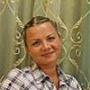

Дошкольное отделение школы № 479
В 2015 году 19% первоклассников Школы № 479 пришли из дошкольного отделения.
- улица Маршала Чуйкова, 9к5
- улица Маршала Чуйкова, 11к4
Воспитатели
Воспитатели, которых чаще всего благодарят родители (отзывы и профили сотрудников взяты с официального сайта школы):|

Воспитатель
Лялина Татьяна Владимировна
3 благодарности |
Логопед
Иванова Наталья Михайловна
2 благодарности |
Воспитатель
Рогожина Галина Ивановна
1 благодарность |
Воспитатель
Корчагина Марина Николаевна
1 благодарность |
|
Логопед
Липатова Татьяна Анатольевна
1 благодарность |
Воспитатель
Татарникова Светлана Вячеславовна
1 благодарность |
Воспитатель
Лисицына Мария Михайловна
1 благодарность |
Отзывы
Данные собраны c официального сайта школы и через форму для отзывов.
Огромную благодарность от родителей хотим выразить воспитателям детей группы №9 дошкольного образования, Корчагиной Марине Николаевне и Лисицыной Марии Михайловне, а так же логопеду Липатовой Татьяне Анатольевне, за преданность своему делу и огромную проделанную работу с нашими детьми. Это воспитатели " от Бога", которым не страшно доверить своего ребенка! Низкий Вам поклон за ваше терпение, трудолюбие, работоспособность. Оставайтесь такими же жизнерадостными и прекрасными! Всех благ, здоровья и сил в вашем нелегком деле. Спасибо!
Хочется выразить ОГРОМНУЮ благодарность нашим любимым воспитателям, Рогожиной Галине Ивановне и Татарниковой Светлане Вячеславовне за тот трогательный праздник, который они устроили для наших выпускников. Мой ребёнок с большим желанием посещал детский сад,а это во многом зависит от воспитателей. Спасибо Вам за ваш труд!
Вложенный файл
Вложенный файл
Родители 1 младшей группы «Ромашково» выражают огромную благодарность всему преподавательскому коллективу ДОУ №410. Большой удачей для наших деток стала встреча с воспитателем – Лялиной Татьяной Владимировной; воспитателем, который любит и уважает свое дело. Заботливое и внимательное отношение к каждому малышу помогло нашим детям быстрее адаптироваться к садику. Умная, внимательная, терпеливая, умеющая найти общий язык с каждым ребенком – Татьяна Владимировна, каждое утро встречает нас приветливо и радушно. Татьяна Владимировна сочетает в себе строгость и доброту, уважение к маленькому человеку и требовательность. Воспитательный процесс в группе построен с учетом психологических особенностей каждого ребенка. Занятия, которые проводятся в группе всегда разнообразные и увлекательные. Рисунки и поделки детей – родители всегда могут увидеть в конце дня. Наши детки с радостью показывают нам свои поделки и с интересом дома повторяют сделанное в группе. Отдельная благодарность помощнику воспитателя – Цветковой Елене Александровне. Благодаря ее внимательному отношению, в группе всегда царит порядок, идеальная чистота, комфорт и уют. Дети всегда накормлены и опрятны.
Спасибо нашей САМОЙ ЛУЧШЕЙ ВОСПИТАТЕЛЬНИЦЕ и САМОЙ ЛУЧШЕЙ НЯНЕЧКЕ за то, что Вы отдаете частичку своего сердца нашим детям! Здоровья Вам, творческих и профессиональных успехов в Вашем непростом деле!
С уважением и благодарностью, родители 1 младшей группы «Ромашково».
Спасибо нашей САМОЙ ЛУЧШЕЙ ВОСПИТАТЕЛЬНИЦЕ и САМОЙ ЛУЧШЕЙ НЯНЕЧКЕ за то, что Вы отдаете частичку своего сердца нашим детям! Здоровья Вам, творческих и профессиональных успехов в Вашем непростом деле!
С уважением и благодарностью, родители 1 младшей группы «Ромашково».
Добрый день! Позвольте мне сказать несколько добрых слов о нашем чудесном садике 346 в Кузьминках. Начать хотела бы со слов благодарности нашей замечательной Наталье Владимировне! Очень досадно, что мой отзыв уже частично не актуален, к нашему великому огорчению, Наталья Владимировна в нашем садике больше не работает! Но тем не менее, хотелось бы рассказать о том, какой замечательный она педагог! За несколько лет, что мы посещаем садик, мы очень сроднились, словами не передать, как дети любят Наталью Владимировну! Энергичная, добрая, ласковая, порядочная, заботливая - это все о ней! Душа детского сада!
Ее жизнеродостность и позитивный настрой просто восхищают! Ни один праздник или утренник не обходился без ее участия, садик многое потерял с ее уходом. Мы родители очень расстроены, не знаем какие подобрать слова, чтобы обьснить детям, почему любимая Наталья Владимировна больше не придет к ним. Сложно передать, сколько она вкладывала в детей сил и любви! Ее слова "я мечтаю, чтобы мои дети были идеальными, наверное потому я бываю порой очень требовательной" о многом говорят! «Мои дети» - это так Наталья Владимировна говорит о детях из нашей логопедической 10 группы! Отношение к нашим деткам, как к своим, это так трогательно! Удивительно, как этой худенькой женщине удавалось все успевать, она ведь кроме того, что великолепный педагог, чуткий психолог и просто замечатеный человек, еще и заботливая мама двух детей и замечательная жена. Этот как раз тот самый случай, когда человеку, который любит свою работу удается все, и на все хватает времени. Дорогая Наталья Владимировна, желаем вам успехов во всех начинаниях и на новой работе! Уверена, вас успех ждет везде, куда бы вы не пришли!
Спасибо огромное за наших деток! Нам очень повезло, что мы попали в этот садик, я уже писала однажды, какой прекрасный наш садик. Но я с удовольствием повторюсь, люди должны знать, что такие садики есть! Милые мамочки и папочки, если вы хотите, чтобы ваш ребенок был любим, чтобы уважали его мнение, чтобы он получал квалифицированную помощь логопеда, чтобы он развивался и физически, и интеллектуально, то вам сюда!!! Первое, на что обращаешь внимание, это то, что в садике есть бассейн. Более того, садик расподожен в достаточно экологичном месте, на границе с Кузьминским лесопарком, вокруг множество деревьев и поют птички. А каков ландшафтный дизайн: цветники, кустарники, садовые фигурки, очень ухоженый газон!
За порядком на территории сада тщательным образом следят. Но, естественно, не это главные преимущества садика. Здесь работают потрясающие педагоги!!! Я уже писала о Наталье Владимировне, но другие педагоги не отстают в талантливости и преданности своему делу. Здесь работают выдающиеся люди! Наша воспитатель Наталья Григорьевна, помощник воспитателя Надежда Викторовна, замечательный логопед Наталья Михайловна, преподаватель физкультуры Мария Михайловна и все-все другие сотрудники (заранее прошу прощения, что не назвала всех по имени) - все такие замечательные! Сложно переоценить их заслугу в развитие наших детей! Я уже упомянула выше, что мы посещаем логопедическую группу, и благодаря стараниям Натальи Михайловны, Натальи Владимировны, Натальи Григорьевны, а так же сплоченному труду всего коллектива мы уже видим результаты. Дорогие вы наши, спасибо за требовательность и вашу ответственность!
За широкий кругозор наших детишек! Спасибо большое за ваш последовательный подход, за терпение, за отзывчивость, за добро и любовь, за то, что мы можем вам доверить наше самое дорогое и спокойно заниматься работой! Спасибо Вам огромное, что всегда находите время на доброе слово, совет и помощь нам, родителям, в воспитании наших порой очень сложных детей! Дай вам Бог здоровья и счастья за ваш святой труд! С уважением, мама Анюты Татариновой
Ее жизнеродостность и позитивный настрой просто восхищают! Ни один праздник или утренник не обходился без ее участия, садик многое потерял с ее уходом. Мы родители очень расстроены, не знаем какие подобрать слова, чтобы обьснить детям, почему любимая Наталья Владимировна больше не придет к ним. Сложно передать, сколько она вкладывала в детей сил и любви! Ее слова "я мечтаю, чтобы мои дети были идеальными, наверное потому я бываю порой очень требовательной" о многом говорят! «Мои дети» - это так Наталья Владимировна говорит о детях из нашей логопедической 10 группы! Отношение к нашим деткам, как к своим, это так трогательно! Удивительно, как этой худенькой женщине удавалось все успевать, она ведь кроме того, что великолепный педагог, чуткий психолог и просто замечатеный человек, еще и заботливая мама двух детей и замечательная жена. Этот как раз тот самый случай, когда человеку, который любит свою работу удается все, и на все хватает времени. Дорогая Наталья Владимировна, желаем вам успехов во всех начинаниях и на новой работе! Уверена, вас успех ждет везде, куда бы вы не пришли!
Спасибо огромное за наших деток! Нам очень повезло, что мы попали в этот садик, я уже писала однажды, какой прекрасный наш садик. Но я с удовольствием повторюсь, люди должны знать, что такие садики есть! Милые мамочки и папочки, если вы хотите, чтобы ваш ребенок был любим, чтобы уважали его мнение, чтобы он получал квалифицированную помощь логопеда, чтобы он развивался и физически, и интеллектуально, то вам сюда!!! Первое, на что обращаешь внимание, это то, что в садике есть бассейн. Более того, садик расподожен в достаточно экологичном месте, на границе с Кузьминским лесопарком, вокруг множество деревьев и поют птички. А каков ландшафтный дизайн: цветники, кустарники, садовые фигурки, очень ухоженый газон!
За порядком на территории сада тщательным образом следят. Но, естественно, не это главные преимущества садика. Здесь работают потрясающие педагоги!!! Я уже писала о Наталье Владимировне, но другие педагоги не отстают в талантливости и преданности своему делу. Здесь работают выдающиеся люди! Наша воспитатель Наталья Григорьевна, помощник воспитателя Надежда Викторовна, замечательный логопед Наталья Михайловна, преподаватель физкультуры Мария Михайловна и все-все другие сотрудники (заранее прошу прощения, что не назвала всех по имени) - все такие замечательные! Сложно переоценить их заслугу в развитие наших детей! Я уже упомянула выше, что мы посещаем логопедическую группу, и благодаря стараниям Натальи Михайловны, Натальи Владимировны, Натальи Григорьевны, а так же сплоченному труду всего коллектива мы уже видим результаты. Дорогие вы наши, спасибо за требовательность и вашу ответственность!
За широкий кругозор наших детишек! Спасибо большое за ваш последовательный подход, за терпение, за отзывчивость, за добро и любовь, за то, что мы можем вам доверить наше самое дорогое и спокойно заниматься работой! Спасибо Вам огромное, что всегда находите время на доброе слово, совет и помощь нам, родителям, в воспитании наших порой очень сложных детей! Дай вам Бог здоровья и счастья за ваш святой труд! С уважением, мама Анюты Татариновой
Кремпольская Татьяна Ивановна
Директор
+7 903 241-50-21
Если вы нашли ошибку или неточность, пожалуйста, сообщите нам об этом.
Ученик, выпускник или родитель? Оставьте отзыв о детском саде.